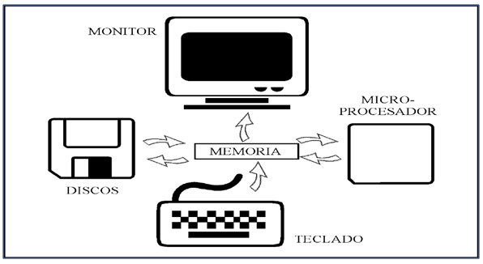

El ordenador es un sistema compuesto por hardware que necesita instrucciones (software) para funcionar. Sin software, el hardware no sirve de nada.
Para facilitar el uso del hardware, se diseña software especializado llamado sistema operativo, que gestiona los recursos y potencia sus funciones.
¿Qué es un sistema operativo? Es un conjunto de programas que organizan y controlan el funcionamiento del ordenador, permitiendo que este realice tareas eficientemente.
Objetivos del sistema operativo:
• Seguridad: Impide el acceso directo al hardware mediante modos de ejecución como modo protegido (Kernel) y modo usuario.
• Abstracción: Oculta la complejidad del hardware para facilitar la interacción con el usuario, convirtiendo el hardware físico en una máquina virtual más poderosa.
Funciones principales: carga y ejecución de programas, multitarea, gestión de recursos y almacenamiento, interacción usuario-sistema.

Gestión de Memoria
Asigna eficientemente la memoria RAM a los procesos, garantizando su correcta ejecución y distribución justa.

Gestión de Procesos
Coordina la ejecución, planificación y comunicación entre procesos, maximizando el uso del CPU.
Gestión de Archivos
Organiza, guarda y protege los archivos para un acceso seguro y estructurado a la información.
Gestión de Entrada/Salida
Administra periféricos como teclado, ratón o impresoras, facilitando la comunicación entre hardware y software.
Seguridad
Evita accesos no autorizados y ataques, protegiendo los datos y asegurando la integridad del sistema.
Gestión de Red
Gestiona conexiones a redes e internet, asegurando la comunicación entre dispositivos y recursos compartidos.